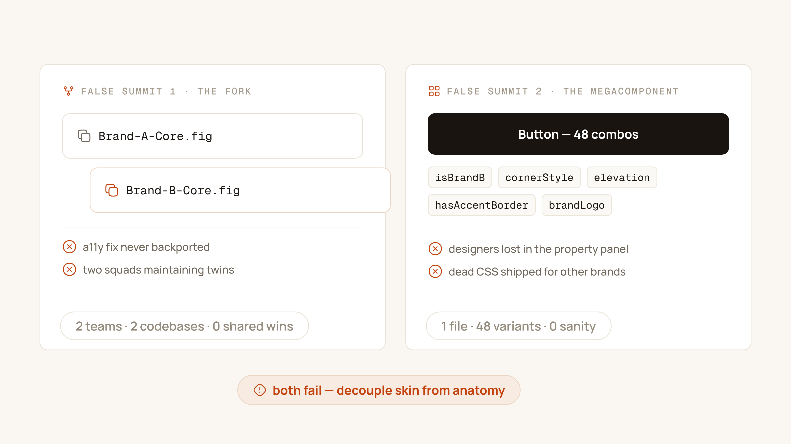
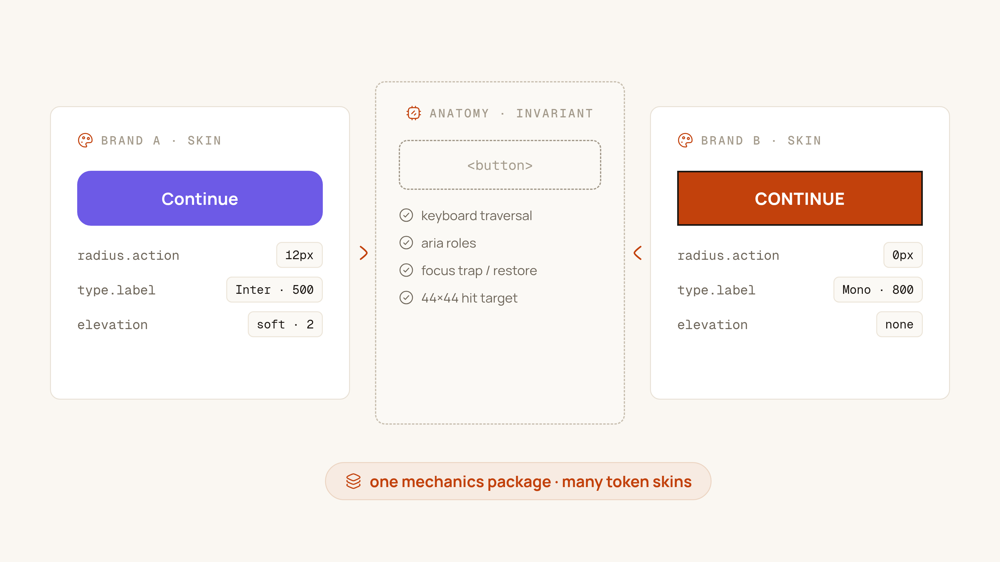
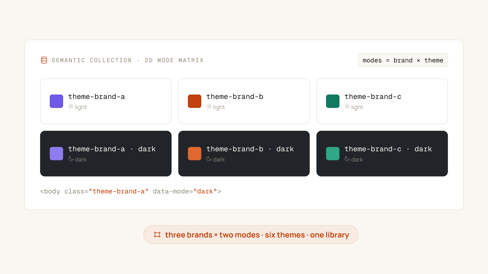

It always starts in a leadership offsite. Someone pulls up three brand sites side by side, winces at how different they look, and asks the question that will consume the next eighteen months: "Why don't we just build one shared design system for all our brands?"
The question is right. The two ways teams usually answer it are catastrophically wrong. I've watched both fail up close — and helped build the third way that actually survives contact with production.
Two false summits
False summit 1: The Fork
The pragmatic answer: copy Core.fig into Brand-B-Core.fig, swap the logo, done. It works for exactly one quarter. Then Brand A ships an accessibility fix to its date picker, and nobody backports it to Brand B. Then Brand B's squad, blocked on a shared decision, "temporarily" rebuilds the table. Eight months later you have two design systems, two component libraries in code, and two platform teams doing the same job twice — the exact cost the shared system was meant to eliminate, now doubled.
False summit 2: The Megacomponent
The engineering answer: one Button for all brands, configured by props. So the button grows isBrandB, cornerStyle, elevation, hasAccentBorder — 48 prop combinations, of which maybe nine ever occur in a real product. The CSS carries dead branches for brands that never ship. Designers face a variant panel that reads like an aircraft cockpit. Nobody knows which combinations are legal, so every review becomes archaeology.

The core pattern: headless anatomy, token skin
The architecture that works splits every component into two layers that change for completely different reasons:
Anatomy — the invariant. Keyboard traversal order, ARIA roles, focus management, hit targets (44×44 minimum), state machine logic. This is identical across brands because it's dictated by humans and assistive technology, not by brand books. One master component in Figma. One package in code.
Skin — the variable. Surface colors, borders, typography, shadows, spacing. Everything a brand book is allowed to touch, expressed exclusively as token references. The component never contains a raw hex, a raw pixel radius, or a raw font stack — only pointers into a token layer the brand theme controls.

Brands should argue about border-radius and brand purple. They should never get the chance to argue about focus order or hit-target size.
The five battlegrounds
The anatomy/skin split is easy to agree with in a workshop and brutally hard in the details. These are the five places where multi-brand systems actually live or die.
1. Typography geometry
Brand A's geometric sans and Brand B's humanist serif have different x-heights, different optical sizes, different everything. If your buttons use fixed heights, Brand B's label will clip or float. The fix: no fixed heights anywhere. Buttons and inputs size from padding-block / padding-inline around the text; type ships as bundles like type.interactive.label (family, size, weight, line-height as one token); alignment leans on leading-trim / text-box-trim so mixed typefaces still optically center.
2. Radius polarization
One brand is soft and friendly (12px everywhere), another is brutalist (0px, no negotiation). A single radius.md token cannot serve both. Use contextual semantic tokens — radius.interactive.action for buttons and inputs, radius.surface.card for containers — and let each brand map them to its own scale. The component asks "what's my action radius?", never "is this the square brand?"
3. Density
A trading terminal and a marketing site share components but not spacing. Don't build Compact variants — that doubles your component count per brand. Instead, expose a --density-multiplier and derive padding with calc(). Density becomes a theme-level dial, not a component axis.
4. The 2D matrix: Brand × Mode
Three brands, each with light and dark mode, is six themes. If you model this as six copies of your tokens, you've built the Fork again — in miniature. The escape: one semantic collection where each mode is a Brand × Mode combination, resolved at the root:
<body class="theme-brand-a" data-mode="dark">Components read the same semantic tokens in all six contexts. Only the mapping layer changes. A seventh theme — a new brand, a high-contrast mode — is a new column in one file, not a new library.

5. Iconography
Brands swap icon sets — one uses rounded line icons, another sharp geometric glyphs. If icons are baked into components, every swap is a library-wide event. Use headless icon slots: components hold an empty frame with an icon.size token, the icon itself inherits currentColor, and the brand theme decides which set fills the slot. Swapping iconography becomes a theme change, not a refactor.
Governance: the Rule of Two
Architecture decides what a component is. Governance decides what enters the system at all. Left unchecked, every brand squad pushes its snowflake patterns "upstream" and the shared library becomes a junk drawer of one-brand components.
A pattern stays local until a second brand needs it. One brand is an exception; two brands are a candidate; three brands are a component.
The Rule of Two keeps the core honest: Brand B requests a component Brand A built locally, and only then does it earn promotion into the shared anatomy — refactored to be brand-agnostic in the process. It slows the core down deliberately, and that slowness is the feature.
Verification is not optional
Six themes means six ways for contrast to break and layouts to drift. Manual QA across a Brand × Mode matrix is a fantasy; the only honest answer is automation:
- Contrast in CI. Every token change runs APCA / WCAG 2.2 contrast checks across all Brand × Mode combinations. A failing combination blocks the PR — before a human ever sees it.
- Visual regression as a matrix. Playwright + Storybook screenshot every component in every theme on every merge. Brand B dark mode breaking Brand A light mode becomes impossible to ship silently.
What it buys you
This is the architecture behind the multi-product work I described in the priWatt case study: one mechanics package, brand skins resolved at the token layer, accessibility fixes that propagate to every brand on the next release — and a new brand onboarded by writing a theme file, not by forking a library. The offsite question gets the answer it deserved: yes, one system for all brands — as long as you're disciplined about which parts are allowed to be different.